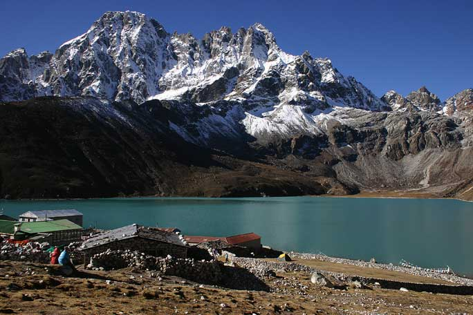
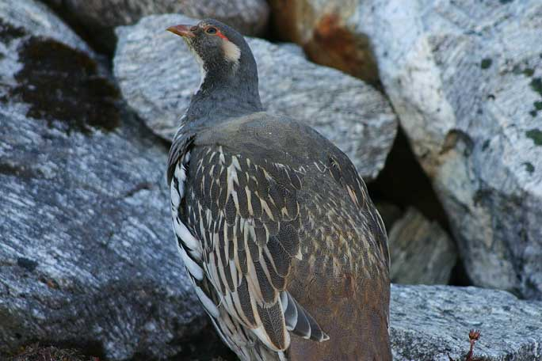
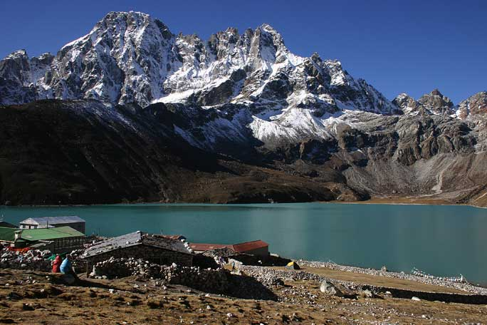
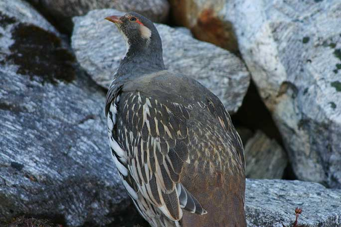

GOKYO VALLEY
Take the alternative route to the serene & rocky Gokyo valleywith pristine turquoise glacial lakes
Gokyo valley lies towards the west of the Khumbu region. In this serene valley, there are abundant pastures for yaks to graze during summer and the pristine turquoise lakes are breathtaking. Gokyo can be visited after trekking up to Everest Base Camp by adding another five days to the itinerary.
If Gokyo is the main destination, then the trek goes up the Everest trail only as far as the teahouses at Kenjoma (where the trail from Khumjung joins the main trail). From this point, the trail leads up towards Mong La pass before dropping steeply back down to the banks of the Dudh Koshi River. The trail then leads past rhododendron and oak forests and waterfalls which are often frozen. A couple of hours on this enchanting trail and Dole is reached, where you spend the night in a teahouse.
 From Dole, it takes only four hours to reach Machherma. The valley that leads west above Machherma is worth a visit, and can be done in the afternoon. The valley is dominated by the unclimbed Mt. Kyojo Ri. The final trail up to Gokyo goes past teahouses at Pangkha and up the terminal moraine of the Ngozumpa glacier, which is the largest glacier in the country. Finally, just above the moraine you see the crystal clear waters of the first of the glacial lakes for which Gokyo valley is renowned.
From Gokyo, the eight-thousander Cho Oyu (8,153m) is seen towards the north. There are many great views around the valley. The most popular of them is seen by ascending a ridge for 2-3 hours to the north-west to reach a small summit. From here the view is a stupendous panorama extending from Cho Oyu and Everest, to Lhotse, and all the way to Makalu. This view is arguably better than the one above Gorak Shep.
 There are two high passes leading out of the Gokyo valley, the Cho La pass being the most traveled, connecting with the Khumbu valley near Lobuche while the other is Renjo La pass that joins the trail between Thame and Nangpa La pass. Following the Everest trek route one takes the alternative exit route as far as Phortse.
From here walk along the eastern side of the valley through the village of Konar. There are no facilities available on this side of the valley until the small teahouses at Nah, a six hours trek from Phortse. Nah is a good place for camping, but for proper accommodation you need to walk another four hours to reach Pangkha. From here follow the route described previously.
If Gokyo is the main destination, then the trek goes up the Everest trail only as far as the teahouses at Kenjoma (where the trail from Khumjung joins the main trail). From this point, the trail leads up towards Mong La pass before dropping steeply back down to the banks of the Dudh Koshi River. The trail then leads past rhododendron and oak forests and waterfalls which are often frozen. A couple of hours on this enchanting trail and Dole is reached, where you spend the night in a teahouse.
 From Dole, it takes only four hours to reach Machherma. The valley that leads west above Machherma is worth a visit, and can be done in the afternoon. The valley is dominated by the unclimbed Mt. Kyojo Ri. The final trail up to Gokyo goes past teahouses at Pangkha and up the terminal moraine of the Ngozumpa glacier, which is the largest glacier in the country. Finally, just above the moraine you see the crystal clear waters of the first of the glacial lakes for which Gokyo valley is renowned.
From Gokyo, the eight-thousander Cho Oyu (8,153m) is seen towards the north. There are many great views around the valley. The most popular of them is seen by ascending a ridge for 2-3 hours to the north-west to reach a small summit. From here the view is a stupendous panorama extending from Cho Oyu and Everest, to Lhotse, and all the way to Makalu. This view is arguably better than the one above Gorak Shep.
 There are two high passes leading out of the Gokyo valley, the Cho La pass being the most traveled, connecting with the Khumbu valley near Lobuche while the other is Renjo La pass that joins the trail between Thame and Nangpa La pass. Following the Everest trek route one takes the alternative exit route as far as Phortse.
From here walk along the eastern side of the valley through the village of Konar. There are no facilities available on this side of the valley until the small teahouses at Nah, a six hours trek from Phortse. Nah is a good place for camping, but for proper accommodation you need to walk another four hours to reach Pangkha. From here follow the route described previously.